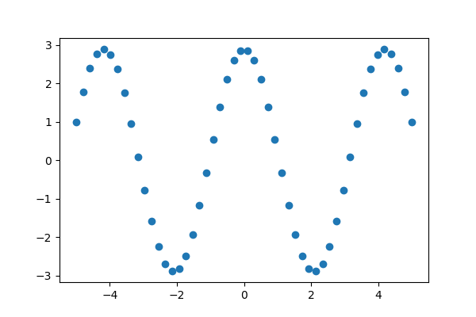
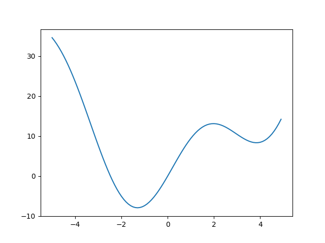
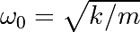

1.5. SciPy : high-level scientific computing¶
Authors: Gaël Varoquaux, Adrien Chauve, Andre Espaze, Emmanuelle Gouillart, Ralf Gommers
Tip
scipy can be compared to other standard scientific-computing
libraries, such as the GSL (GNU Scientific Library for C and C++),
or Matlab’s toolboxes. scipy is the core package for scientific
routines in Python; it is meant to operate efficiently on numpy
arrays, so that NumPy and SciPy work hand in hand.
Before implementing a routine, it is worth checking if the desired
data processing is not already implemented in SciPy. As
non-professional programmers, scientists often tend to re-invent the
wheel, which leads to buggy, non-optimal, difficult-to-share and
unmaintainable code. By contrast, SciPy’s routines are optimized
and tested, and should therefore be used when possible.
Warning
This tutorial is far from an introduction to numerical computing.
As enumerating the different submodules and functions in SciPy would
be very boring, we concentrate instead on a few examples to give a
general idea of how to use scipy for scientific computing.
scipy is composed of task-specific sub-modules:
Tip
They all depend on numpy, but are mostly independent of each
other. The standard way of importing NumPy and these SciPy modules
is:
>>> import numpy as np
>>> import scipy as sp
1.5.1. File input/output: scipy.io¶
scipy.io contains functions for loading and saving data in
several common formats including Matlab, IDL, Matrix Market, and
Harwell-Boeing.
Matlab files: Loading and saving:
>>> import scipy as sp
>>> a = np.ones((3, 3))
>>> sp.io.savemat('file.mat', {'a': a}) # savemat expects a dictionary
>>> data = sp.io.loadmat('file.mat')
>>> data['a']
array([[1., 1., 1.],
[1., 1., 1.],
[1., 1., 1.]])
Warning
Python / Matlab mismatch: The Matlab file format does not support 1D arrays.
>>> a = np.ones(3)
>>> a
array([1., 1., 1.])
>>> a.shape
(3,)
>>> sp.io.savemat('file.mat', {'a': a})
>>> a2 = sp.io.loadmat('file.mat')['a']
>>> a2
array([[1., 1., 1.]])
>>> a2.shape
(1, 3)
Notice that the original array was a one-dimensional array, whereas the saved and reloaded array is a two-dimensional array with a single row.
For other formats, see the scipy.io documentation.
See also
Load text files:
numpy.loadtxt()/numpy.savetxt()Clever loading of text/csv files:
numpy.genfromtxt()Fast and efficient, but NumPy-specific, binary format:
numpy.save()/numpy.load()Basic input/output of images in Matplotlib:
matplotlib.pyplot.imread()/matplotlib.pyplot.imsave()More advanced input/output of images:
imageio
1.5.2. Special functions: scipy.special¶
“Special” functions are functions commonly used in science and mathematics that are not considered to be “elementary” functions. Examples include
the gamma function,
scipy.special.gamma(),the error function,
scipy.special.erf(),Bessel functions, such as
scipy.special.jv()(Bessel functions of the first kind), andelliptic functions, such as
scipy.special.ellipj()(Jacobian elliptic functions).
Other special functions are combinations of familiar elementary functions, but they offer better accuracy or robustness than their naive implementations would.
Most of these function are computed elementwise and follow standard
NumPy broadcasting rules when the input arrays have different shapes.
For example, scipy.special.xlog1py() is mathematically equivalent
to .
>>> import scipy as sp
>>> x = np.asarray([1, 2])
>>> y = np.asarray([[3], [4], [5]])
>>> res = sp.special.xlog1py(x, y)
>>> res.shape
(3, 2)
>>> ref = x * np.log(1 + y)
>>> np.allclose(res, ref)
True
However, it is numerically favorable for small , when explicit addition
of 1 would lead to loss of precision due to floating point truncation error.
>>> x = 2.5
>>> y = 1e-18
>>> x * np.log(1 + y)
0.0
>>> sp.special.xlog1py(x, y)
2.5e-18
Many special functions also have “logarithmized” variants. For instance, the gamma function is related to the factorial function by , but it extends the domain from the positive integers to the complex plane.
>>> x = np.arange(10)
>>> np.allclose(sp.special.gamma(x + 1), sp.special.factorial(x))
True
>>> sp.special.gamma(5) < sp.special.gamma(5.5) < sp.special.gamma(6)
True
The factorial function grows quickly, and so the gamma function overflows
for moderate values of the argument. However, sometimes only the logarithm
of the gamma function is needed. In such cases, we can compute the logarithm
of the gamma function directly using scipy.special.gammaln().
>>> x = [5, 50, 500]
>>> np.log(sp.special.gamma(x))
array([ 3.17805383, 144.56574395, inf])
>>> sp.special.gammaln(x)
array([ 3.17805383, 144.56574395, 2605.11585036])
Such functions can often be used when the intermediate components of a calculation would overflow or underflow, but the final result would not. For example, suppose we wish to compute the ratio .
>>> a = sp.special.gamma(500)
>>> b = sp.special.gamma(499)
>>> a, b
(inf, inf)
Both the numerator and denominator overflow, so performing $a / b$ will not return the result we seek. However, the magnitude of the result should be moderate, so the use of logarithms comes to mind. Combining the identities and , we get:
>>> log_a = sp.special.gammaln(500)
>>> log_b = sp.special.gammaln(499)
>>> log_res = log_a - log_b
>>> res = np.exp(log_res)
>>> res
499.0000000...
Similarly, suppose we wish to compute the difference
. For this, we use
scipy.special.logsumexp(), which computes
using a numerical trick that avoids overflow.
>>> res = sp.special.logsumexp([log_a, log_b],
... b=[1, -1]) # weights the terms of the sum
>>> res
2605.113844343...
For more information about these and many other special functions, see
the documentation of scipy.special.
1.5.3. Linear algebra operations: scipy.linalg¶
scipy.linalg provides a Python interface to efficient, compiled
implementations of standard linear algebra operations: the BLAS (Basic
Linear Algebra Subroutines) and LAPACK (Linear Algebra PACKage) libraries.
For example, the scipy.linalg.det() function computes the determinant
of a square matrix:
>>> import scipy as sp
>>> arr = np.array([[1, 2],
... [3, 4]])
>>> sp.linalg.det(arr)
-2.0
Mathematically, the solution of a linear system is ,
but explicit inversion of a matrix is numerically unstable and should be avoided.
Instead, use scipy.linalg.solve():
>>> A = np.array([[1, 2],
... [2, 3]])
>>> b = np.array([14, 23])
>>> x = sp.linalg.solve(A, b)
>>> x
array([4., 5.])
>>> np.allclose(A @ x, b)
True
Linear systems with special structure can often be solved more efficiently
than more general systems. For example, systems with triangular matrices
can be solved using scipy.linalg.solve_triangular():
>>> A_upper = np.triu(A)
>>> A_upper
array([[1, 2],
[0, 3]])
>>> np.allclose(sp.linalg.solve_triangular(A_upper, b, lower=False),
... sp.linalg.solve(A_upper, b))
True
scipy.linalg also features matrix factorizations/decompositions
such as the singular value decomposition.
>>> A = np.array([[1, 2],
... [2, 3]])
>>> U, s, Vh = sp.linalg.svd(A)
>>> s # singular values
array([4.23606798, 0.23606798])
The original matrix can be recovered by matrix multiplication of the factors:
>>> S = np.diag(s) # convert to diagonal matrix before matrix multiplication
>>> A2 = U @ S @ Vh
>>> np.allclose(A2, A)
True
>>> A3 = (U * s) @ Vh # more efficient: use array math broadcasting rules!
>>> np.allclose(A3, A)
True
Many other decompositions (e.g. LU, Cholesky, QR), solvers for structured
linear systems (e.g. triangular, circulant), eigenvalue problem algorithms,
matrix functions (e.g. matrix exponential), and routines for special matrix
creation (e.g. block diagonal, toeplitz) are available in scipy.linalg.
1.5.4. Interpolation: scipy.interpolate¶
scipy.interpolate is useful for fitting a function from experimental
data and thus evaluating points where no reference value exists. The module
includes, but not limited to FITPACK Fortran subroutines.
By imagining experimental data close to a sine function:
>>> measured_time = np.linspace(0, 1, 10)
>>> rng = np.random.default_rng()
>>> noise = (rng.random(10)*2 - 1) * 1e-1
>>> measures = np.sin(2 * np.pi * measured_time) + noise
scipy.interpolate has many interpolation methods which need to be
chosen based on the data. See the
tutorial
for some guidelines:
>>> spline = sp.interpolate.CubicSpline(measured_time, measures)
Then the result can be evaluated at the time of interest:
>>> interpolation_time = np.linspace(0, 1, 50)
>>> linear_results = spline(interpolation_time)
scipy.interpolate.CloughTocher2DInterpolator is similar to
scipy.interpolate.CubicSpline, but for 2-D arrays.
See the summary exercise on
Maximum wind speed prediction at the Sprogø station for a more advanced spline
interpolation example.
1.5.5. Optimization and fit: scipy.optimize¶
scipy.optimize provides algorithms for root finding, curve fitting,
and more general optimization.
1.5.5.1. Root Finding¶
scipy.optimize.root_scalar() attempts to find a root of a specified
scalar-valued function (i.e., an argument at which the function value is zero).
Like many scipy.optimize functions, the function needs an initial
guess of the solution, which the algorithm will refine until it converges or
recognizes failure. We also provide the derivative to improve the rate of
convergence.
>>> def f(x):
... return (x-1)*(x-2)
>>> def df(x):
... return 2*x - 3
>>> x0 = 0 # guess
>>> res = sp.optimize.root_scalar(f, x0=x0, fprime=df)
>>> res
converged: True
flag: converged
function_calls: 12
iterations: 6
root: 1.0
method: newton
Warning
None of the functions in scipy.optimize that accept a guess are
guaranteed to converge for all possible guesses! (For example, try
x0=1.5 in the example above, where the derivative of the function is
exactly zero.) If this occurs, try a different guess, adjust the options
(like providing a bracket as shown below), or consider whether SciPy
offers a more appropriate method for the problem.
Note that only one the root at 1.0 is found. By inspection, we can tell
that there is a second root at 2.0. We can direct the function toward a
particular root by changing the guess or by passing a bracket that contains
only the root we seek.
>>> res = sp.optimize.root_scalar(f, bracket=(1.5, 10))
>>> res.root
2.0
For multivariate problems, use scipy.optimize.root().
>>> def f(x):
... # intersection of unit circle and line from origin
... return [x[0]**2 + x[1]**2 - 1,
... x[1] - x[0]]
>>> res = sp.optimize.root(f, x0=[0, 0])
>>> np.allclose(f(res.x), 0, atol=1e-10)
True
>>> np.allclose(res.x, np.sqrt(2)/2)
True
Over-constrained problems can be solved in the least-squares
sense using scipy.optimize.root() with method='lm'
(Levenberg-Marquardt).
>>> def f(x):
... # intersection of unit circle, line from origin, and parabola
... return [x[0]**2 + x[1]**2 - 1,
... x[1] - x[0],
... x[1] - x[0]**2]
>>> res = sp.optimize.root(f, x0=[1, 1], method='lm')
>>> res.success
True
>>> res.x
array([0.76096066, 0.66017736])
See the documentation of scipy.optimize.root_scalar()
and scipy.optimize.root() for a variety of other solution
algorithms and options.
1.5.5.2. Curve fitting¶
Suppose we have data that is sinusoidal but noisy:
>>> x = np.linspace(-5, 5, num=50) # 50 values between -5 and 5
>>> noise = 0.01 * np.cos(100 * x)
>>> a, b = 2.9, 1.5
>>> y = a * np.cos(b * x) + noise
We can approximate the underlying amplitude, frequency, and phase from the data by least squares curve fitting. To begin, we write a function that accepts the independent variable as the first argument and all parameters to fit as separate arguments:
>>> def f(x, a, b, c):
... return a * np.sin(b * x + c)
We then use scipy.optimize.curve_fit() to find and :
>>> params, _ = sp.optimize.curve_fit(f, x, y, p0=[2, 1, 3])
>>> params
array([2.900026 , 1.50012043, 1.57079633])
>>> ref = [a, b, np.pi/2] # what we'd expect
>>> np.allclose(params, ref, rtol=1e-3)
True
1.5.5.3. Optimization¶
Suppose we wish to minimize the scalar-valued function of a single variable :
>>> def f(x):
... return x**2 + 10*np.sin(x)
>>> x = np.arange(-5, 5, 0.1)
>>> plt.plot(x, f(x))
[<matplotlib.lines.Line2D object at ...>]
>>> plt.show()
We can see that the function has a local minimizer near and a global minimizer near , but the precise values cannot be determined from the plot.
The most appropriate function for this purpose is
scipy.optimize.minimize_scalar().
Since we know the approximate locations of the minima, we will provide
bounds that restrict the search to the vicinity of the global minimum.
>>> res = sp.optimize.minimize_scalar(f, bounds=(-2, -1))
>>> res
message: Solution found.
success: True
status: 0
fun: -7.9458233756...
x: -1.306440997...
nit: 8
nfev: 8
>>> res.fun == f(res.x)
True
If we did not already know the approximate location of the global minimum,
we could use one of SciPy’s global minimizers, such as
scipy.optimize.differential_evolution(). We are required to pass
bounds, but they do not need to be tight.
>>> bounds=[(-5, 5)] # list of lower, upper bound for each variable
>>> res = sp.optimize.differential_evolution(f, bounds=bounds)
>>> res
message: Optimization terminated successfully.
success: True
fun: -7.9458233756...
x: [-1.306e+00]
nit: 6
nfev: 111
jac: [ 9.948e-06]
For multivariate optimization, a good choice for many problems is
scipy.optimize.minimize().
Suppose we wish to find the minimum of a quadratic function of two
variables, .
>>> def f(x):
... return (x[0] - 1)**2 + (x[1] - 2)**2
Like scipy.optimize.root(), scipy.optimize.minimize()
requires a guess x0. (Note that this is the initial value of
both variables rather than the value of the variable we happened to
label .)
>>> res = sp.optimize.minimize(f, x0=[0, 0])
>>> res
message: Optimization terminated successfully.
success: True
status: 0
fun: 1.70578...e-16
x: [ 1.000e+00 2.000e+00]
nit: 2
jac: [ 3.219e-09 -8.462e-09]
hess_inv: [[ 9.000e-01 -2.000e-01]
[-2.000e-01 6.000e-01]]
nfev: 9
njev: 3
This barely scratches the surface of SciPy’s optimization features, which
include mixed integer linear programming, constrained nonlinear programming,
and the solution of assignment problems. For much more information, see the
documentation of scipy.optimize and the advanced chapter
Mathematical optimization: finding minima of functions.
See the summary exercise on Non linear least squares curve fitting: application to point extraction in topographical lidar data for another, more advanced example.
1.5.6. Statistics and random numbers: scipy.stats¶
scipy.stats contains fundamental tools for statistics in Python.
1.5.6.1. Statistical Distributions¶
Consider a random variable distributed according to the standard normal. We draw a sample consisting of 100000 observations from the random variable. The normalized histogram of the sample is an estimator of the random variable’s probability density function (PDF):
>>> dist = sp.stats.norm(loc=0, scale=1) # standard normal distribution
>>> sample = dist.rvs(size=100000) # "random variate sample"
>>> plt.hist(sample, bins=50, density=True, label='normalized histogram')
>>> x = np.linspace(-5, 5)
>>> plt.plot(x, dist.pdf(x), label='PDF')
[<matplotlib.lines.Line2D object at ...>]
>>> plt.legend()
<matplotlib.legend.Legend object at ...>
Suppose we knew that the sample had been drawn from a distribution belonging
to the family of normal distributions, but we did not know the particular
distribution’s location (mean) and scale (standard deviation). We perform
maximum likelihood estimation of the unknown parameters using the
distribution family’s fit method:
>>> loc, scale = sp.stats.norm.fit(sample)
>>> loc
0.0015767005...
>>> scale
0.9973396878...
Since we know the true parameters of the distribution from which the sample was drawn, we are not surprised that these estimates are similar.
1.5.6.2. Sample Statistics and Hypothesis Tests¶
The sample mean is an estimator of the mean of the distribution from which the sample was drawn:
>>> np.mean(sample)
0.001576700508...
NumPy includes some of the most fundamental sample statistics (e.g.
numpy.mean(), numpy.var(), numpy.percentile());
scipy.stats includes many more. For instance, the geometric mean
is a common measure of central tendency for data that tends to be
distributed over many orders of magnitude.
>>> sp.stats.gmean(2**sample)
1.0010934829...
SciPy also includes a variety of hypothesis tests that produce a
sample statistic and a p-value. For instance, suppose we wish to
test the null hypothesis that sample was drawn from a normal
distribution:
>>> res = sp.stats.normaltest(sample)
>>> res.statistic
5.20841759...
>>> res.pvalue
0.07396163283...
Here, statistic is a sample statistic that tends to be high for
samples that are drawn from non-normal distributions. pvalue is
the probability of observing such a high value of the statistic for
a sample that has been drawn from a normal distribution. If the
p-value is unusually small, this may be taken as evidence that
sample was not drawn from the normal distribution. Our statistic
and p-value are moderate, so the test is inconclusive.
There are many other features of scipy.stats, including circular
statistics, quasi-Monte Carlo methods, and resampling methods.
For much more information, see the documentation of scipy.stats
and the advanced chapter statistics.
1.5.7. Numerical integration: scipy.integrate¶
1.5.7.1. Quadrature¶
Suppose we wish to compute the definite integral
numerically. scipy.integrate.quad()
chooses one of several adaptive techniques depending on the parameters, and
is therefore the recommended first choice for integration of function of a single variable:
>>> integral, error_estimate = sp.integrate.quad(np.sin, 0, np.pi/2)
>>> np.allclose(integral, 1) # numerical result ~ analytical result
True
>>> abs(integral - 1) < error_estimate # actual error < estimated error
True
Other functions for numerical quadrature, including integration of
multivariate functions and approximating integrals from samples, are available
in scipy.integrate.
1.5.7.2. Initial Value Problems¶
scipy.integrate also features routines for integrating Ordinary
Differential Equations (ODE).
For example, scipy.integrate.solve_ivp() integrates ODEs of the form:
from an initial time and initial state to a final time or until an event occurs (e.g. a specified state is reached).
As an introduction, consider the initial value problem given by and the initial condition on the interval . We begin by defining a callable that computes given the current time and state.
>>> def f(t, y):
... return -2 * y
Then, to compute y as a function of time:
>>> t_span = (0, 4) # time interval
>>> t_eval = np.linspace(*t_span) # times at which to evaluate `y`
>>> y0 = [1,] # initial state
>>> res = sp.integrate.solve_ivp(f, t_span=t_span, y0=y0, t_eval=t_eval)
and plot the result:
>>> plt.plot(res.t, res.y[0])
[<matplotlib.lines.Line2D object at ...>]
>>> plt.xlabel('t')
Text(0.5, ..., 't')
>>> plt.ylabel('y')
Text(..., 0.5, 'y')
>>> plt.title('Solution of Initial Value Problem')
Text(0.5, 1.0, 'Solution of Initial Value Problem')
Let us integrate a more complex ODE: a damped spring-mass oscillator. The position of a mass attached to a spring obeys the 2nd order ODE with natural frequency , damping ratio , spring constant , mass , and damping coefficient .
Before using scipy.integrate.solve_ivp(), the 2nd order ODE
needs to be transformed into a system of first-order ODEs. Note that
If we define where and , then the first order equation:
is equivalent to the original second order equation.
We set:
>>> m = 0.5 # kg
>>> k = 4 # N/m
>>> c = 0.4 # N s/m
>>> zeta = c / (2 * m * np.sqrt(k/m))
>>> omega = np.sqrt(k / m)
and define the function that computes :
>>> def f(t, z, zeta, omega):
... return (z[1], -2.0 * zeta * omega * z[1] - omega**2 * z[0])
Integration of the system follows:
>>> t_span = (0, 10)
>>> t_eval = np.linspace(*t_span, 100)
>>> z0 = [1, 0]
>>> res = sp.integrate.solve_ivp(f, t_span, z0, t_eval=t_eval,
... args=(zeta, omega), method='LSODA')
Tip
With the option method=’LSODA’, scipy.integrate.solve_ivp() uses the LSODA
(Livermore Solver for Ordinary Differential equations with Automatic method switching
for stiff and non-stiff problems). See the ODEPACK Fortran library for more details.
1.5.8. Fast Fourier transforms: scipy.fft¶
The scipy.fft module computes fast Fourier transforms (FFTs)
and offers utilities to handle them. Some important functions are:
scipy.fft.fft()to compute the FFTscipy.fft.fftfreq()to generate the sampling frequenciesscipy.fft.ifft()to compute the inverse FFT, from frequency space to signal space
As an illustration, a (noisy) input signal (sig), and its FFT:
>>> sig_fft = sp.fft.fft(sig)
>>> freqs = sp.fft.fftfreq(sig.size, d=time_step)
|
|
|---|---|
Signal |
FFT |

As the signal comes from a real-valued function, the Fourier transform is symmetric.
The peak signal frequency can be found with freqs[power.argmax()]

Setting the Fourier component above this frequency to zero and inverting
the FFT with scipy.fft.ifft(), gives a filtered signal.
Note
The code of this example can be found here
Fully worked examples:
Crude periodicity finding (link) |
Gaussian image blur (link) |
|---|---|
|
|


1.5.9. Signal processing: scipy.signal¶
Tip
scipy.signal is for typical signal processing: 1D,
regularly-sampled signals.
Resampling scipy.signal.resample(): resample a signal to n
points using FFT.
>>> t = np.linspace(0, 5, 100)
>>> x = np.sin(t)
>>> x_resampled = sp.signal.resample(x, 25)
>>> plt.plot(t, x)
[<matplotlib.lines.Line2D object at ...>]
>>> plt.plot(t[::4], x_resampled, 'ko')
[<matplotlib.lines.Line2D object at ...>]
Tip
Notice how on the side of the window the resampling is less accurate and has a rippling effect.
This resampling is different from the interpolation provided by scipy.interpolate as it
only applies to regularly sampled data.

Detrending scipy.signal.detrend(): remove linear trend from signal:
>>> t = np.linspace(0, 5, 100)
>>> rng = np.random.default_rng()
>>> x = t + rng.normal(size=100)
>>> x_detrended = sp.signal.detrend(x)
>>> plt.plot(t, x)
[<matplotlib.lines.Line2D object at ...>]
>>> plt.plot(t, x_detrended)
[<matplotlib.lines.Line2D object at ...>]
Filtering:
For non-linear filtering, scipy.signal has filtering (median
filter scipy.signal.medfilt(), Wiener scipy.signal.wiener()),
but we will discuss this in the image section.
Tip
scipy.signal also has a full-blown set of tools for the design
of linear filter (finite and infinite response filters), but this is
out of the scope of this tutorial.
Spectral analysis:
scipy.signal.spectrogram() compute a spectrogram –frequency
spectrums over consecutive time windows–, while
scipy.signal.welch() comptes a power spectrum density (PSD).
1.5.10. Image manipulation: scipy.ndimage¶
scipy.ndimage provides manipulation of n-dimensional arrays as
images.
1.5.10.1. Geometrical transformations on images¶
Changing orientation, resolution, ..
>>> import scipy as sp
>>> # Load an image
>>> face = sp.datasets.face(gray=True)
>>> # Shift, rotate and zoom it
>>> shifted_face = sp.ndimage.shift(face, (50, 50))
>>> shifted_face2 = sp.ndimage.shift(face, (50, 50), mode='nearest')
>>> rotated_face = sp.ndimage.rotate(face, 30)
>>> cropped_face = face[50:-50, 50:-50]
>>> zoomed_face = sp.ndimage.zoom(face, 2)
>>> zoomed_face.shape
(1536, 2048)

>>> plt.subplot(151)
<Axes: >
>>> plt.imshow(shifted_face, cmap=plt.cm.gray)
<matplotlib.image.AxesImage object at 0x...>
>>> plt.axis('off')
(-0.5, 1023.5, 767.5, -0.5)
>>> # etc.
1.5.10.2. Image filtering¶
Generate a noisy face:
>>> import scipy as sp
>>> face = sp.datasets.face(gray=True)
>>> face = face[:512, -512:] # crop out square on right
>>> import numpy as np
>>> noisy_face = np.copy(face).astype(float)
>>> rng = np.random.default_rng()
>>> noisy_face += face.std() * 0.5 * rng.standard_normal(face.shape)
Apply a variety of filters on it:
>>> blurred_face = sp.ndimage.gaussian_filter(noisy_face, sigma=3)
>>> median_face = sp.ndimage.median_filter(noisy_face, size=5)
>>> wiener_face = sp.signal.wiener(noisy_face, (5, 5))
Other filters in scipy.ndimage.filters and scipy.signal
can be applied to images.
1.5.10.3. Mathematical morphology¶
Tip
Mathematical morphology stems from set theory. It characterizes and transforms geometrical structures. Binary (black and white) images, in particular, can be transformed using this theory: the sets to be transformed are the sets of neighboring non-zero-valued pixels. The theory was also extended to gray-valued images.

Mathematical-morphology operations use a structuring element in order to modify geometrical structures.
Let us first generate a structuring element:
>>> el = sp.ndimage.generate_binary_structure(2, 1)
>>> el
array([[False, True, False],
[...True, True, True],
[False, True, False]])
>>> el.astype(int)
array([[0, 1, 0],
[1, 1, 1],
[0, 1, 0]])
Erosion
scipy.ndimage.binary_erosion()>>> a = np.zeros((7, 7), dtype=int) >>> a[1:6, 2:5] = 1 >>> a array([[0, 0, 0, 0, 0, 0, 0], [0, 0, 1, 1, 1, 0, 0], [0, 0, 1, 1, 1, 0, 0], [0, 0, 1, 1, 1, 0, 0], [0, 0, 1, 1, 1, 0, 0], [0, 0, 1, 1, 1, 0, 0], [0, 0, 0, 0, 0, 0, 0]]) >>> sp.ndimage.binary_erosion(a).astype(a.dtype) array([[0, 0, 0, 0, 0, 0, 0], [0, 0, 0, 0, 0, 0, 0], [0, 0, 0, 1, 0, 0, 0], [0, 0, 0, 1, 0, 0, 0], [0, 0, 0, 1, 0, 0, 0], [0, 0, 0, 0, 0, 0, 0], [0, 0, 0, 0, 0, 0, 0]]) >>> # Erosion removes objects smaller than the structure >>> sp.ndimage.binary_erosion(a, structure=np.ones((5,5))).astype(a.dtype) array([[0, 0, 0, 0, 0, 0, 0], [0, 0, 0, 0, 0, 0, 0], [0, 0, 0, 0, 0, 0, 0], [0, 0, 0, 0, 0, 0, 0], [0, 0, 0, 0, 0, 0, 0], [0, 0, 0, 0, 0, 0, 0], [0, 0, 0, 0, 0, 0, 0]])
Dilation
scipy.ndimage.binary_dilation()>>> a = np.zeros((5, 5)) >>> a[2, 2] = 1 >>> a array([[0., 0., 0., 0., 0.], [0., 0., 0., 0., 0.], [0., 0., 1., 0., 0.], [0., 0., 0., 0., 0.], [0., 0., 0., 0., 0.]]) >>> sp.ndimage.binary_dilation(a).astype(a.dtype) array([[0., 0., 0., 0., 0.], [0., 0., 1., 0., 0.], [0., 1., 1., 1., 0.], [0., 0., 1., 0., 0.], [0., 0., 0., 0., 0.]])
Opening
scipy.ndimage.binary_opening()>>> a = np.zeros((5, 5), dtype=int) >>> a[1:4, 1:4] = 1 >>> a[4, 4] = 1 >>> a array([[0, 0, 0, 0, 0], [0, 1, 1, 1, 0], [0, 1, 1, 1, 0], [0, 1, 1, 1, 0], [0, 0, 0, 0, 1]]) >>> # Opening removes small objects >>> sp.ndimage.binary_opening(a, structure=np.ones((3, 3))).astype(int) array([[0, 0, 0, 0, 0], [0, 1, 1, 1, 0], [0, 1, 1, 1, 0], [0, 1, 1, 1, 0], [0, 0, 0, 0, 0]]) >>> # Opening can also smooth corners >>> sp.ndimage.binary_opening(a).astype(int) array([[0, 0, 0, 0, 0], [0, 0, 1, 0, 0], [0, 1, 1, 1, 0], [0, 0, 1, 0, 0], [0, 0, 0, 0, 0]])
Closing:
scipy.ndimage.binary_closing()
An opening operation removes small structures, while a closing operation fills small holes. Such operations can therefore be used to “clean” an image.
>>> a = np.zeros((50, 50))
>>> a[10:-10, 10:-10] = 1
>>> rng = np.random.default_rng()
>>> a += 0.25 * rng.standard_normal(a.shape)
>>> mask = a>=0.5
>>> opened_mask = sp.ndimage.binary_opening(mask)
>>> closed_mask = sp.ndimage.binary_closing(opened_mask)

For gray-valued images, eroding (resp. dilating) amounts to replacing a pixel by the minimal (resp. maximal) value among pixels covered by the structuring element centered on the pixel of interest.
>>> a = np.zeros((7, 7), dtype=int)
>>> a[1:6, 1:6] = 3
>>> a[4, 4] = 2; a[2, 3] = 1
>>> a
array([[0, 0, 0, 0, 0, 0, 0],
[0, 3, 3, 3, 3, 3, 0],
[0, 3, 3, 1, 3, 3, 0],
[0, 3, 3, 3, 3, 3, 0],
[0, 3, 3, 3, 2, 3, 0],
[0, 3, 3, 3, 3, 3, 0],
[0, 0, 0, 0, 0, 0, 0]])
>>> sp.ndimage.grey_erosion(a, size=(3, 3))
array([[0, 0, 0, 0, 0, 0, 0],
[0, 0, 0, 0, 0, 0, 0],
[0, 0, 1, 1, 1, 0, 0],
[0, 0, 1, 1, 1, 0, 0],
[0, 0, 3, 2, 2, 0, 0],
[0, 0, 0, 0, 0, 0, 0],
[0, 0, 0, 0, 0, 0, 0]])
1.5.10.4. Connected components and measurements on images¶
Let us first generate a nice synthetic binary image.
>>> x, y = np.indices((100, 100))
>>> sig = np.sin(2*np.pi*x/50.) * np.sin(2*np.pi*y/50.) * (1+x*y/50.**2)**2
>>> mask = sig > 1
scipy.ndimage.label() assigns a different label to each connected
component:
>>> labels, nb = sp.ndimage.label(mask)
>>> nb
8
Now compute measurements on each connected component:
>>> areas = sp.ndimage.sum(mask, labels, range(1, labels.max()+1))
>>> areas # The number of pixels in each connected component
array([190., 45., 424., 278., 459., 190., 549., 424.])
>>> maxima = sp.ndimage.maximum(sig, labels, range(1, labels.max()+1))
>>> maxima # The maximum signal in each connected component
array([ 1.80238238, 1.13527605, 5.51954079, 2.49611818, 6.71673619,
1.80238238, 16.76547217, 5.51954079])
Extract the 4th connected component, and crop the array around it:
>>> sp.ndimage.find_objects(labels)[3]
(slice(30, 48, None), slice(30, 48, None))
>>> sl = sp.ndimage.find_objects(labels)[3]
>>> import matplotlib.pyplot as plt
>>> plt.imshow(sig[sl])
<matplotlib.image.AxesImage object at ...>
See the summary exercise on Image processing application: counting bubbles and unmolten grains for a more advanced example.
1.5.11. Summary exercises on scientific computing¶
The summary exercises use mainly NumPy, SciPy and Matplotlib. They provide some real-life examples of scientific computing with Python. Now that the basics of working with NumPy and SciPy have been introduced, the interested user is invited to try these exercises.
Exercises:
Proposed solutions:
1.5.12. Full code examples for the SciPy chapter¶

Resample a signal with scipy.signal.resample


Normal distribution: histogram and PDF

Comparing 2 sets of samples from Gaussians


Plot geometrical transformations on images

Minima and roots of a function

Optimization of a two-parameter function
Plotting and manipulating FFTs for filtering
1.5.12.18. Solutions of the exercises for SciPy¶

Curve fitting: temperature as a function of month of the year

Simple image blur by convolution with a Gaussian kernel
Gallery generated by Sphinx-Gallery
See also
References to go further
Some chapters of the advanced and the packages and applications parts of the SciPy lectures
The SciPy cookbook